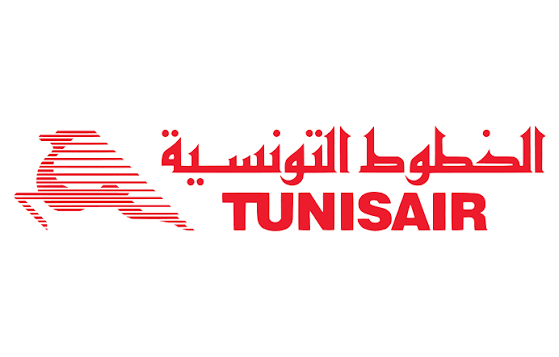

Catégorie : Compagnie Nationale | Alliance : Indépendante | Note : ⭐ 3.1 / 5

Compagnie nationale tunisienne proposant de nombreuses liaisons directes vers l'Europe et l'Afrique du Nord.
📜 Histoire : Créée en 1948, Tunisair est la doyenne des compagnies aériennes en Tunisie, symbole de la liaison historique entre l'Afrique du Nord et l'Europe.
✈️ Flotte : Flotte d'environ 15 à 20 appareils composée d'Airbus A320, A319 et d'A330-200 pour le long-courrier.
🧳 Bagages : 1 bagage cabine de 8kg + 1 bagage soute inclus (généralement 23kg)
🛡️ Sécurité : Respecte les normes de sécurité internationales requises pour desservir l'espace aérien européen.
Tunis - Paris, Tunis - Lyon, Tunis - Marseille, Djerba - Genève
🎯 Pour qui ? Idéal pour les voyageurs privilégiant les vols directs vers la Tunisie et une franchise bagage complète, à la recherche de tarifs souvent compétitifs sur cette destination.